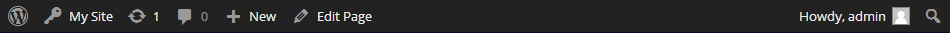
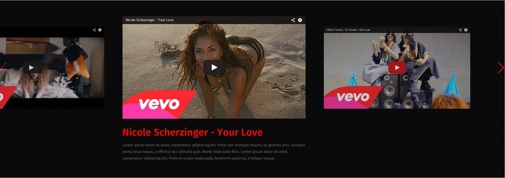

Welcome to VideoTouch
Thank you for purchasing our theme. If you have any questions that are beyond the scope of this help file, please feel free check our knowledgebase or submit a ticket on our support desk. Thanks so much!
Installation
You can install the theme in two ways: through WordPress, or via FTP. The VideoTouch.zip file is the Installable WordPress Theme and what you need to use to get the theme installed. Please see the following sections for each method. But first, you need to download the VideoTouch files from your Themeforest account. Navigate to your downloads tab on Themeforest and find VideoTouch. Click the download button to see the two options. The Main Files and the Installable WordPress Theme. See below.
Follow the steps below to install via WordPress:
Navigate to Appearance > Themes.
Click Install Themes and hit the upload button.
Navigate to find the “VideoTouch.zip” file on your computer and click “Install Now”
Wait while the theme is uploaded and installed.
Activate the newly installed theme. Go to Appearance > Themes and activate it.
Follow the steps below to install via FTP:
Log into your hosting space via an FTP software
Unzip the VideoTouch.zip file and ONLY use the extracted
VideoTouch theme folder Navigate to find the “VideoTouch.zip” file on your computer and click “Install Now”
Activate the newly installed theme. Go to Appearance -> Themes and activate it.
Dummy Content Import:
One of the most frequently asked questions "how i can make my webpage as on demo?". The solution is simple - just import the Dummy Content! Dummy content provides you the same pages, settings and arrangement as you can see in our demo version of site. To install the demo content follow the next steps:
1. Download the dummy content:
First, you need to download the VideoTouch files from your Themeforest account. Navigate to your downloads tab on Themeforest and find VideoTouch. Click the download button to see the two options. The Main Files and the Installable WordPress Theme. Download the Main Files.See below (Nr.1).
2. Import the content:
-
Log into your site as an administrator
-
Make sure you activated your theme before proceeding.
-
Go to Tools → Import
-
Upload the demo content .xml using the form provided on that page.
-
You will be asked to map the authors in this export file to users on the blog. For each author, you may choose to map to an existing user on the blog or to create a new user.
-
You will then have the choice to import attachments, so click on the “Download and import file attachments” box.
-
Please be patient while WordPress imports all the content. Posts, Pages, Projects, and Menus are imported. You will need assign the menu a theme location & you’ll need to configure widgets. This is a limitation of WordPress’ import system.
3. Set everything up:
Firstly you have to check what is missing from your dummy content, in most of cases when you take a look at your page after import you see nothing. It's because of the category selection. You have to enter each page and change categories from uncategorized to other existing ones. It's because of the Category id, if you preventive had any category, the current category id's will not match. The same thing can happen with images from carousel. Also you should not forget to set the imported menu as "Primary Menu" and set up the homepage.
-
Go to Appearence => Menus, take a look at the menu, if import did his job not quite good, arrange the menu elements as on the Demo. After what scroll down till end and set current menu as "Primary Menu" (see below).
-
Go to Settings => Reading and set your front page one of existing, or build your own one.
{kind=link}
{kind=link}
-
In case your content is not displayed on home page or any other page, Go to Pages => "Page you need Name" and edit every list post or carousel. Change their categoryes/photos and enjoy the look of that page. You can select all categories or to choose categories one by one by clicking on the category name then click again in the input then you will be able to select more categories.
{kind=link}
{kind=link}
4. Settings import
In your folder there is a .txt file named "import.txt". This file contains the default settings used in our demo page of VideoTouch. To add them just go to VideoTouch => Import options and paste all the content from "import.txt" file.
How to update the theme:
You need to manually download the new theme package from your Themeforest account. Once you have the new theme package, you can choose to upload the theme via WordPress or via FTP. Please see the information below for how to download new files, and install it via WP or via FTP.
How to download new theme files from ThemeForest
-
Log into your Themeforest account and navigate to your downloads tab. Find the “VideoTouch” theme purchase.
-
Click the “download” button next to it and choose to download the “Installable WordPress Theme” which is just the WordPress file, or choose the “Main Files” which is the entire package that contains everything.
-
Then you need to decide if you want to install the update via FTP or via WordPress. Directions for both methods are below.
How to update your theme via WordPress.
-
You need to deactivate the current “VideoTouch” theme in the “appearance > themes” section by simply activating a different theme. Once you activate a different theme, you can delete the VideoTouch theme. Dont worry, your content will not be lost.
-
Retrieve the “VideoTouch.zip” file from your new Themeforest download. If you downloaded the “Main Files” from Themeforest, then you need to unzip the archive file you received, the VideoTouch.zip will be inside of it
-
Then simply upload the “VideoTouch.zip” file in the “appearance > themes” section. Click on the “Install Themes” tab at the top and choose to upload the zip file.
-
Once it uploads, choose to activate the theme.
-
Lastly, update the included plugins. You will see a notification message letting you know the plugins have a new version and need to be updated. Follow the on screen steps.
How to update your theme via FTP.
-
Go to “wp-content > themes” location and backup your “VideoTouch” theme folder by saving it to your computer, or you can choose to simply delete it. Your content will not be lost.
-
Retrieve the “VideoTouch.zip” file from your new Themeforest download and extract the file to get the “VideoTouch” theme folder.
-
Then simply drag and drop the new “VideoTouch” theme folder into “wp-content > themes” location. Choose to “Replace” the current one if you did not delete it.
-
Lastly, update the included plugins. You will see a notification message letting you know the plugins have a new version and need to be updated. Follow the on screen steps.
Theme options
Our theme comes with a custom theme options panel. You can find an explanation for most of them below.
General
-
Enable preloader for website?
This option can add to your website a fancy preloader that will wait till all the page will be loaded. You can use it only for homepage, or for the entire website.
-
Use onepage layout?
This option will disable the clicks on the menu of your website and will make them slide to sections of the page. If you intend to use the one page layout, please set this to yes.
-
Display featured image in post?
This option enables/disables the featured image inside a post. If you don't want to show the featured image inside single post pages, you can disable them from here. Note that this will also disable galleries/videos/audio if disabled.
-
Enable lightbox?
This option enables/disables the
lightbox for images . These will apply to featured images inside posts, inside galleries. We recommend to enable this option for better usability and user experience. -
Lazyload images
If set to yes, the images from most of the builder elements will be preloaded. Basically, the images will not be shown until you scroll down and they get into the viewport. This will improve your website speed significantly, but use with care. Might conflict with some scripts or plugins. Please report to our help desk if you have issues.
-
Enable human type date?
This option is also recommended as it will show a date in a more human friendly format (ex: 3 days ago). You can disable this option as well. Note that this option might not apply to absolutely all dates on the website as there are designed parts that are better to remain as designed.
-
Which comment system you want to use?
You can configure what comment system you will use. The default WordPress comments or Facebook comments. If you need Disqus comments, you will need the plugin.

-
Facebook modal box
This will show a Facebook modal box once the user will enter your website. This is used for gathering likes for your Facebook page.
-
Show wordpress admin bar?
In this tab you can disable/enable the wordpress top admin bar.
 -
Enable sticky menu
This options gives you possibility to enable or disable the sticky menu, also you can change here the sticky menu background and text colors. Sticky menu is the menu that appears whenever you scroll lower than top menu.
-
Enable Mega Menu
This theme comes with a built-in mega menu. This will give you the posibility to arrange your menu items into columns, add images, shortcodes and much more. Check our knowledgebase for more info on this.
-
Enablet likes
This will add a like element ( button ) to post and this is used sometimes to sort post by likes and in other options.
-
Likes Icon
Here you can choose the icon that you want to show for like element.
-
Generate Likes
This option will generate a random number of likes for post.
-
Tracking code
Here you can add your google analytics tracking code, or any other script you need.
-
Grid view excerpt size
Here you enter the maximum characters showed in excerpt for your grid articles.
-
List view excerpt size
Here you enter the maximum characters showed in excerpt for your list view
-
Big post view excerpt size
Here you enter the maximum characters showed in excerpt for your big posts view.
-
Timeline view excerpt size
Here you enter the maximum characters you want to show for excerpt.
-
User posts status
Set the default status for the posts published by users.
{kind=link}
{kind=link}
{kind=link}
Styles
-
Boxed Layout
You can either enable or disable the boxed layout. This will make some options inside the layout builder row options not work as expected. Your row expand option will not work, and you background will not show for the whole width of the website.
-
Theme Background customization
This option gives posibility to edit you background, you can add a image, change color, or disable it (use the default color from our demo)
-
Custom favicon
In this tab you can find the options to change your custom favicon. A favicon is the icon that appears before you website address in the browser.
-
Facebook image
Here you can upload the image that you want to show one the website page is shared on facebook.
-
Enable overlay stripes/dotts effect for images
These options applies in views and on single post page. If you wish to not have the dots layer above the image - you can enable/disable them from here.
-
Enable sharing overlay buttons in views
With this function you can disable/enable the social sharing on article-image hover.
-
Logo type / Upload your logo
Here you can change your logo with a image or simple text. If you choose image logo, an uploader will appear. Browse and select your custom logo. If you wish to have a text logo, there are typography options for it. Just select text logo and choose the font you like. Fonts are included from Google fonts library. Note: Using the retina option will result in shrinking your logo width in half.
{kind=link}
Colors
-
General color for the text on the website
This options gives you posibility to change the whole webpage text color.
-
Link color
Here you can change the color of links on your webpage
-
Link color on hover
This option gives you posibility to change the link colors on hover.
-
Link colors in views
In this tab you can select your links color in articles (grid/list/bigpost)
-
Titles colors on hover in view
Here you can select article titles colors on hover.
-
Meta text color
In this tab you can select the text color of your tags.
-
Primary color
Primary color is the main color of the website, It is used for backgrounds, borders of elements, etc. This defines your main brand/website color.
-
Primary color on hover
Change the hover text color of the primary elements.
-
Secondary color
Secondary color of the website is used for backgrounds, borders of elements, etc. This defines your secondary or contrast brand website color.
-
Secondary color on hover
Change the hover text color of the secondary elements.
-
Primary text color
You can select your color for the text that has a primary color background
-
Primary text color on hover
Change the hover text color of the primary text elements.
-
Secondary text color
You can select your color for the text that has a secondary color background
-
Secondary text color on hover
Change the hover text color of the secondary text elements.
-
Submenu background color
Set the background color for submenues.
-
Submenu background color for items
Set the background color for submenu items on hover.
-
Menu text color
You can select here your menu and submenu text colors.
-
Menu text color on hover
The colors of the text in the menus and submenus on hover
{kind=link}
Image sizes
In this tab you can choose the dimensions for the images that are used on your website. Caution - these are not the sizes that will be shown on the website as the website is adaptive, but it is the size of the images that will be used. We strongly recommend to use given settings and not to fiddle with any as long as you are not sure what you are doing.
{kind=link}
Layout
Here you can set the defaults for your website. Default sidebar settings and the way articles are going to be shown on archive pages, single post, pages, shop page and products (if you have WooCommerce installed).
{kind=link}
Typography
Settings below are used to change typography for the whole webpage.
You can either use the default fonts that are set in the theme or you can use any from the Google fonts directory.
Also, you can upload you own custom font. Use the tool here to create a custom web font.
{kind=link}
Single Post
In this section you can enable/disable related posts, social sharing, tags.
{kind=link}
Page Settings
In this section you can change settings for pages, to enable/disable page meta and social sharing.
{kind=link}
Social
These are used for social icons. The email set here is going to be used for contact forms.
{kind=link}
Custom CSS
If you need to add your custom CSS, we recommend to add it in this section. These will overwrite theme default styles. Please, check twice before adding something here because we are not responsible for your actions.
{kind=link}
Sidebars
To create new sidebars just use this tab. Add a sidebar name and press the add button. This will create a new sidebar area that you can use anywhere on the website.
{kind=link}
Import/Export
This is an encoded data for your website. Be very careful with this. Changing data here will result in corrupting website settings data and this will make your site not to run properly. Unless you are sure you copy the entire data from our export do not press the save settings button.
{kind=link}
Layout Builder
Ok, you know the theme options, but let's check this theme's party piece: the Touch Layout Builder.
The Touch Layout Builder is a built-in drag and drop layout composer that let's you create different layouts. Below you have the builder elements explained.
This theme includes a very powerful layout builder. You can edit/delete/move your elements how you like via drag-and-drop. Our builder containes a lot of elements and options. Below, it's a description of the most common and general settings and options.
First of all, the layout builder schematics: its built on 12 columns layout. All your content can have 2-12/12 columns.
There are rows, columns and elements.
Rows - horizontal container blocks. They contain the columns. Rows have options, are draggable (sortable) between them. You can add as many as you can.
Every row has the following options:
These settings are individual on each row.
-
Row ID
will add an id to the row. This is used if you want to customize elements within a certain row with custom CSS or mostly used for the one page layout. The ID's used here will be set as links for the menu items. -
Background color
will add a color the the entire row to all elements. -
Text color
will change the color of the content inside the selected row. Note that this option works only for text elements added inside builder. Default grid/list elements have a color set and do not inherit the color set here. -
Background image
- you can use a background image for you row. Just browse any image, select the options you want for it and it should be shown on your website. If you don't know what the background options do, check this link. Here you can find information about these options. -
Background video
- you can use a background video for you row. Just browse any mp4 and webm file (both are used for browser compatibility). The video will be automatically set to fit the whole row. -
Row mask
- will add a layer above the video or the background image. You can select the color and the opacity of the layer mask is set to yes. -
Paddings
are margins that go inside your container. -
Margins
are margins that go outside your container. -
Content extend
can extend your content on 100% horizontally. Note that this option works only with non-boxed layout settings. -
Text align options
change the way the content inside you row is aligned. It only reffers to the text elements, not the entire block. -
Vertical aligh
Will align the content inside your row. Note that the bottom and middle align are used with fullscreen row only. -
Box shadow
If set to yes, it will add a subtle inset shadow to your rows. -
Expand row
Is set to expand - it will make the content of the row fit the screen of your device, and will remove the container. -
Fullscreen row
Is set to fullscreen - it will calculate the screen width and height of your device and will make the row fit the entire screen, not only in width (like the expand row) but in height as well. -
Special effects options
change the way the row will appear on load on your website. If the row is already visible it will be animated immediately. If not, on scroll and when the row will appear in the viewport - the row will be animated. -
Slide up
this effect will make your content appear sliding from bottom. -
Perspective X
this effect will make your content appear flipping on X axis. -
Perspective Y
this effect will make your content appear flipping on Y axis. -
Opacity
this will make your content appear with fade in effect. -
Slide left
this effect will make your content slide in from left to right. -
Slide right
this effect will make your content slide in from right to left.
You can choose from 6 row appeareance effects:
Please, be carefull when applying these effects. All of them are CSS3 so you'll need a browser that understands CSS3 and HTML5. Plus, if used in excess - they will make your website feel slower as all these animations use a good amount of computer resources. We recommend to use 2-3 per page. Also, it's strongly recommended that you don't use row effects where you already have set effects on elements inside that speficic row.
Columns - containers for elements. Their role is to divide your content. You can either add or remove column width with the columns' control buttons.
Logo
This element shows your logo on the website. You can change the logo that is shown by going to the theme options panel to the "Styles" tab. You can add anywhere in your layout builder the logo you have set in VideoTouch => Styles => Logo type.
Social icons
After you set up the links to your social pages in VideoTouch Theme options the non-empty fields will show with this element.
{kind=link}
Search bar
This option add a simple search bar in the location you chose, so users can use to browse your webpage easier
{kind=link}
Menu element
This option gives you pisibility to add your main menu wherever in the page layout and change his text and background color.
{kind=link}
Sidebar
Choose the sidebar you want to show. You can select from the default or create your own dynamically.
Also you can see where to add the sidebar by clicking going to sidebar tab in theme options.Slider
To use the slider option, firstly you need to build one in Sliders => Add New. There is a little guide below.
{kind=link}
After you create a slider it will apear as choice in your layout builder.
List portfolios
This builder element is a place where you can add your recent projects, events or any other kind of activity you did. This is a kind of presentation of your skills, and your experience. If you don't have a pretty portfolio with needed information and argues - you can lose a big part of people that could offer you work. This is an important piece of page so you should pay attention how you set it up!
See a little guide in the screen bellow
{kind=link}
Testimonials
These are used to create testimonials on page. You can add them dynamically in your layout builder.
Please use square images for author image, to get the rounded effect.
{kind=link}
After what, you will be able to chose one of testimonials category in layout builder.

List posts
This theme offers 5 view types with tons of options. As you can see below, you can select your view type, the categories you want to show your posts from, the posts you want to exclude, how many posts you want to exclude from the start, post behavior, title positions, view layouts, elements per row, etc.
Each view has its own options, you if once you change the view, you get different layout options.
Below you can see how they look:
-
Thumbnail view
shows only images with a hover efect. You have an example below:
Thumbnail view is best for showcase of portfolio. You can choose to have either 1/2/3/4/6 items per row.
-
Grid view
shows images with a hover efect, the title, meta data of the post. Also, with grid view you can select your title position. You have an example below:
The first shows the hover effect of the grid view image. You can choose to have either 1/2/3/4/6 items per row.
-
List View
shows posts listed one above the other. This view an have only 1 item per row. You can choose to show/hide meta, how many posts to extract, and how to split the content. You can split it 3 ways: 1/3, 1/2, 3/4. This shows how much space will the first part of content have. You have an example below:
-
Big posts
shows posts listed one above the other just like list view. Many name it the blog view style. This view an have only 1 item per row. You can choose to show/hide meta, how many posts to extract, and how to split the content. You can split it 3 ways: 1/3, 1/2, 3/4. This shows how much space will the image part of content have. Also, you have the option to show related posts if needed. You have an example below:
-
Super posts
shows posts with max 2 per line. You can choose how many posts to extract. You have an example below:
-
Timeline view

-
Mozaic view

Call to action
element contains 3 things: a text field, a button link and a button text. If you don't need a button, leave the fields blank. You can see on the image below


Team members
These are shown by category. First of all, you add them as a custom post. Do not forget to add each team to a certain category. In the layout builder you list all team members by category. Also, you have the team members per row options and how many of them to show at all.
you can see below a demo of how your team members field will look
Also you can see below an example of team members form
Advertising
This element has a textarea where you add your code. Be careful what scripts you include, as we are not responsible for this.
{kind=link}
Delimiter
Delimiter
This block creates a visual delimiter in the place you selected in layout builder with width equal to number of columns used.
You can chose one of the following styles (see below):
Below you can see a demo o the delimiters avaible

Title
These are used to give name to your content blocks/elements. There are 5 styles of titles available. There is also a posibility that we'll add more later. Choose the style you want. Also, you can choose the size of the title. You have option to use H1-H5. A title description (subtitle) is also available. If left blank, it not show anything.
And lower you can see a little demo:
Video
With this element's help you can add a video from youtube or vimeo that will take the width equal to your block columns size and will calculate an auto height.
Pay atention that you should insert the clean youtube video url (not the iframe).
{kind=link}
Image
This element element gives you the opportunity to upload or to use an image from your media library. If you set a link, it will show an image with link on your website. If you leave the field blank, the image will not have a link.
{kind=link}
Filters
This function display chosen posts or portfolios with category filter.
You can see an example of options and display below:
{kind=link}
Icon box
These are usually used for showcasing the services or features that you offer/have. Adding one is simple, just like another custom post.
{kind=link}
{kind=link}
Spacer
Creates an empty block with equal to the columns size you select, and height equal to your choice (in pixels). Used to make spaces between element
{kind=link}
Button
This element has 4 sizes. This adds and button on your website. You can select the size, target, link and colors for text and background.
{kind=link}
Contact form
This element adds a contact form on your website. You will recieve the emails sent through it on the mail set in social tab in theme options.
{kind=link}
Below you will find some demos of the contact form

Featured area
element is mostly used for news/magazine websites. It includes 4 posts (1 big post as you main article and 3 smaller). You can select the position of the main article on the right or on the left.
{kind=link}
Shortcodes
This element element let's you use shortcodes from other plugins. Not all plugins might be compatible so we are not responsible for that.
you can see a little example in the image below:
{kind=link}
{kind=link}
Text
This element lets you to add any text in your layout builder. You should get a WordPress editor where you can add any text you want.
{kind=link}
Image carousel
This element is used to add a custom image gallery anywhere in your layout builder. Carousel takes an automatic height and width depending on the number of columns you use.
Example in image below:
{kind=link}
Pricing tables
You can add pricing tables into 2/3/4 per row, with or without gutter. You can see the options below:
Example in image below:
{kind=link}
Listed features
You can have them with border or without. Also, you can select the align of the icons (left or right)
Example in image below:
Counter
You can add counters on the website. You need to enter the title and the percentage. They look like this on the website:
{kind=link}
Clients
You can add clients on the website with 2/3/4/6 columns on the website. You need to enter the titles that will appear on hover or make add a carousel. They look like this on the website:
{kind=link}
Toggle
You can add toggles with a opened/closed state. They have titles and content. They look like this:
{kind=link}
Banner
You can add banner boxed, select the align of the content that they have. They look like this:
{kind=link}
List Products
If you have the WooCommerce plugin installed on your website, you can showcase products on the website. Here are the options that you have for listing products:
{kind=link}
On your website, depending on the options that you have set they should look like this:
This element will show on your page inside a box the people that likes your facebook page
{kind=link}

Latest custom posts
This element will show the latest from from different categories.
{kind=link}
List videos
This element will show the video posts.
{kind=link}
Map
This element gives you the option to insert google maps inside you page, here you need to insert the code that you have to show the map.
{kind=link}
Quote
This element gives you the opotion to add quotes inside you page, you can choose the icon for the quote and the author of the quote.

Ribbon
Show a ribbon element on your website, you can customize the appearance of the element.
{kind=link}

Tab
Create different layout of tabs.
{kind=link}
Timeline
Create a timeline with your features.
{kind=link}
Below you can see a little demo of the timeline element

Video Carousel
This element offers you the option to create a carousel from you vide post by choosing the category from where to get the posts.
{kind=link}
Below you can see a preview of the video carousel.
{kind=link}
Layout builder demo videos
Go to VideoTouch knowledgebase
How to create a homepage
On first install, you will get the blog page only. If you want to use the drag and drop builder and create custom layouts - after creating a new page you'll need to add it to reading options so that WordPress knows what page to show as frontpage. Then set it up in Settings -> Reading as your frontpage like this:FAQ
I have imported the dummy data, but it does not look 100% the same
The dummy data import option from the Import/Export tab of the theme options is not an exact copy of the theme demo mostly because the ID's of the categories, images that were selected demos might not be the same with the ones that will be created on your demo. Also, some of the images and videos are not allowed to be redistributed or haven't been imported at all by the importer.
Every time we do an update and include new features or new elements we'll include the new import data in the theme so you can see it. Any pages, elements, or other data that was not imported can be re-created. Please write on our help desk if you need help with that.
The theme does not install
Usually this issue appears when you are not uploading the right archive to your server. From your downloads on ThemeForest select the "Installable WordPress file only" link which is the zip that you need to upload.
If you need help with that, we have described this in the documentation above, you can find some information by clicking in the menus. If that does not help, please submit a ticket on our help desk.
The theme does not install, stylesheet missing error
Usually this issue appears when you are not uploading the right archive to your server. From your downloads on ThemeForest select the "Installable WordPress file only" link which is the zip that you need to upload.
If you need help with that, we have described this in the documentation above, you can find some information by clicking in the menus. If that does not help, please submit a ticket on our help desk.
How do I edit my header and footer?
The global header and footer can be changed by going to their respective tabs in the theme options panel. You can see a screenshot of that below:
The header and footer elements you set here will be used everywhere on the website. If you decide that you need a custom header for one of your pages like let's say, for your homepage you can just disable it from the page settings. You have a screenshot attached below: